Abra o Flowlab e entre em MY GAMES


O clipe repete sozinho. Repare onde o cursor vai antes de clicar.
Foto da tela.
Abra o navegador em flowlab.io e entre com a sua conta.
No alto da página, clique em My Games. Aparecem os jogos que você já fez.
- Não lembro a senha
- Chame o professor. Não crie conta nova: os seus jogos estão na antiga.
- A lista está vazia
- Confira se entrou com a mesma conta das outras aulas.
Crie um jogo novo


O clipe repete sozinho. Repare onde o cursor vai antes de clicar.
Foto da tela.
Clique no botão verde New Game, no canto de cima à direita da lista.
Abre uma tela com os tipos de projeto.
- Não acho o New Game
- Ele é o único botão verde da página, no alto à direita.
Escolha o PROJETO VAZIO


O clipe repete sozinho. Repare onde o cursor vai antes de clicar.
Foto da tela.
Na tela dos tipos, clique em Empty Project — o projeto vazio.
Abre o editor com a folha branca quadriculada.
- Escolhi outro e veio um jogo pronto
- Volte em My Games, apague esse e comece pelo Empty Project.
Pinte o céu de NOITE
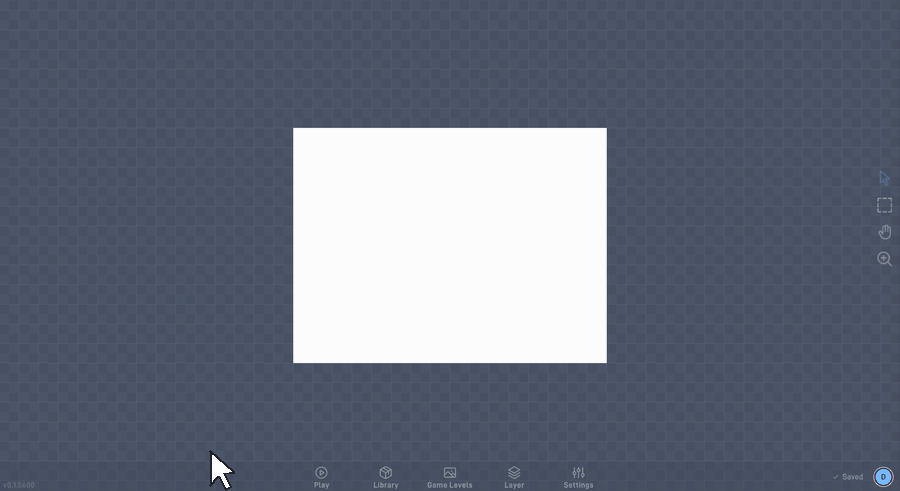
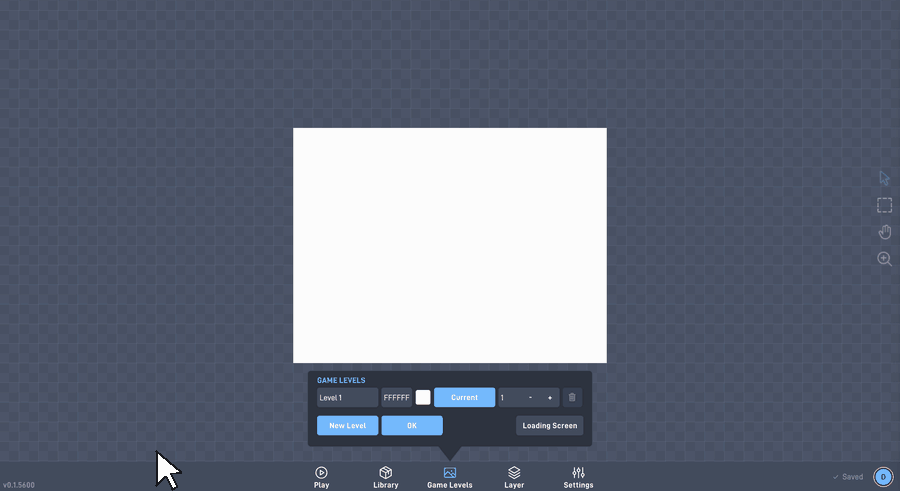
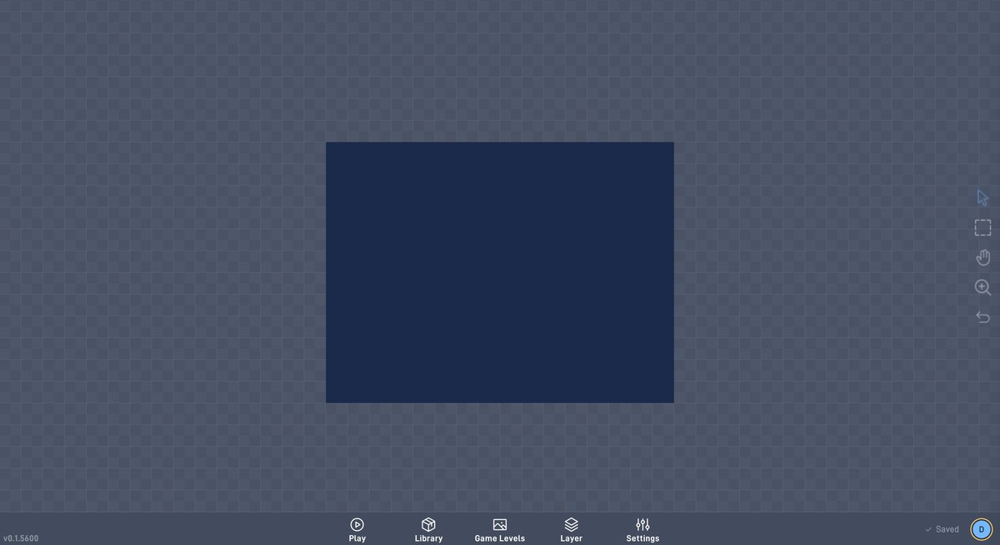
O clipe repete sozinho. Repare onde o cursor vai antes de clicar.
Foto da tela.
Clique em Game Levels, na fileira de baixo. Aparece uma linha só. No campo da cor (FFFFFF), apague, escreva 1B2A4A e aperte Enter.
Um azul bem escuro, de noite. Evite o preto puro: o brilho de hoje é uma soma de cores, e somar com preto não muda nada.
- Digitei e não mudou
- Aperte Enter depois da cor. Sem isso o campo não vale.
- O painel fechou sozinho
- É normal depois do Enter.
Crie o jogador
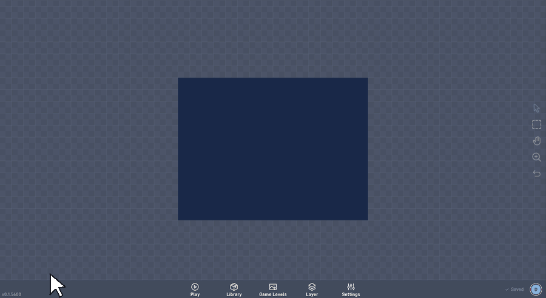
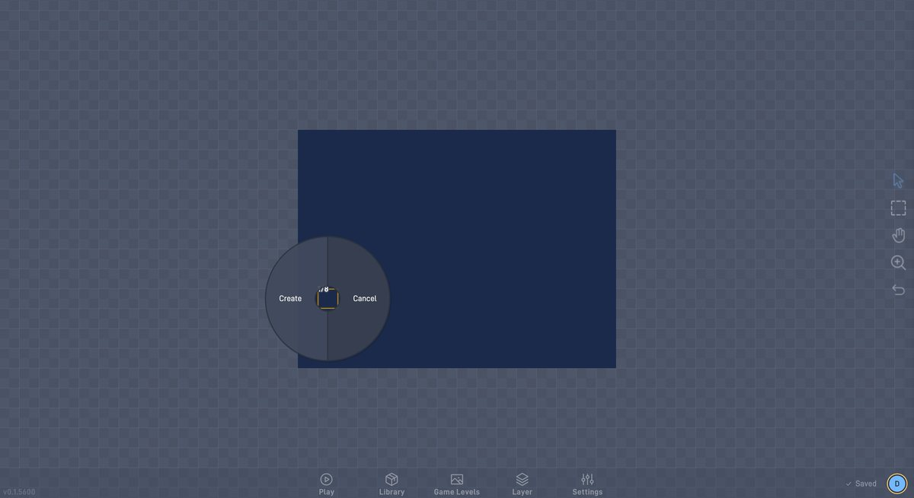
O clipe repete sozinho. Repare onde o cursor vai antes de clicar.
Foto da tela.
Clique uma vez na segunda casa da esquerda, na quarta fileira de baixo para cima. (O chão ainda não existe: ele vai ficar na penúltima fileira de baixo, e o jogador vai cair até lá.)
Abre a roda com Create e Cancel.
- Cliquei fora da folha
- Clique dentro do retângulo escuro. Fora dele não nasce objeto.
Escolha CREATE e escreva JOGADOR
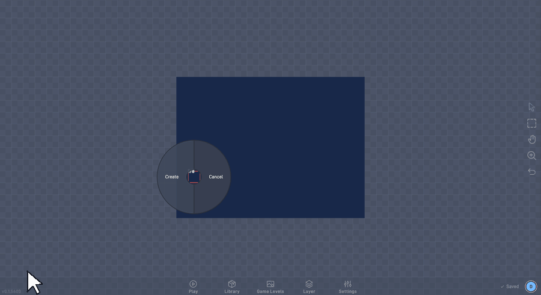
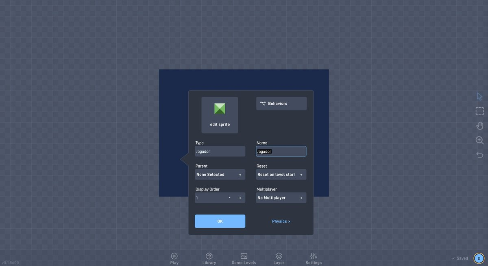
O clipe repete sozinho. Repare onde o cursor vai antes de clicar.
Foto da tela.
Na roda, clique em Create, na metade de cima. Abre o painel do objeto novo.
No campo Name escreva Jogador e aperte Tab. No campo Type, escreva Jogador também.
- Escrevi só no Name
- Clique no campo Type e escreva lá também.
- Escrevi com acento
- Escreva sem acento. Acento em nome de peça dá problema mais para a frente.
O desenho do jogador
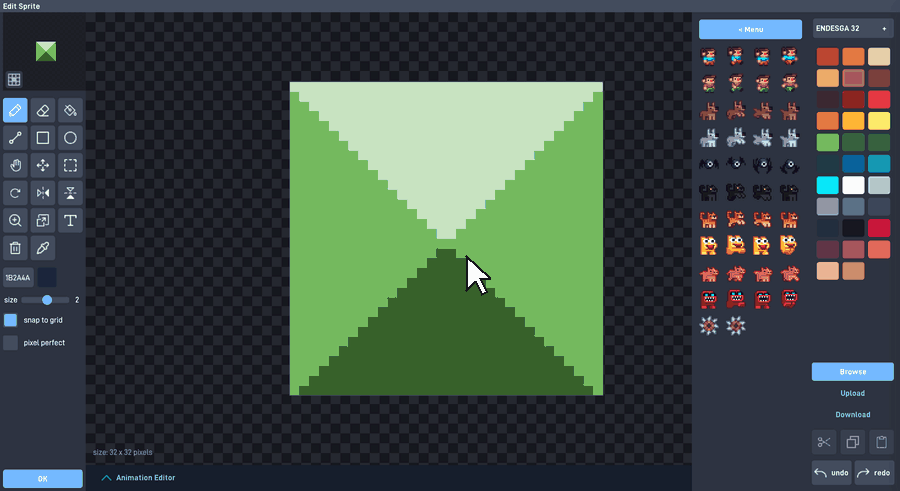
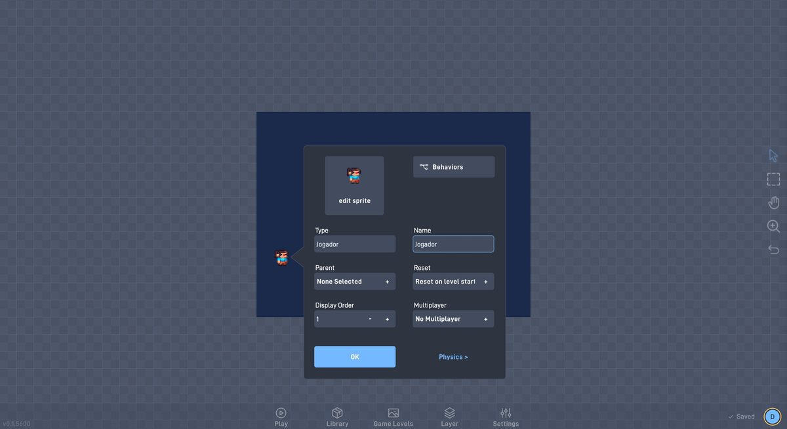
O clipe repete sozinho. Repare onde o cursor vai antes de clicar.
Foto da tela.
Clique no quadrado edit sprite, à esquerda do painel.
1. Clique em Browse, embaixo da paleta de cores.
2. Se aparecer o botão azul < Menu no alto, clique nele.
3. Clique em Flowlab Sprites e depois na faixa azul Characters.
4. Clique no primeiro boneco.
Feche no OK, no canto de baixo à esquerda.
- Não acho o Browse
- Ele fica embaixo da paleta de cores, na coluna da direita.
- Peguei outro boneco
- Qualquer um serve. O curso usa o primeiro.
A FÍSICA do jogador
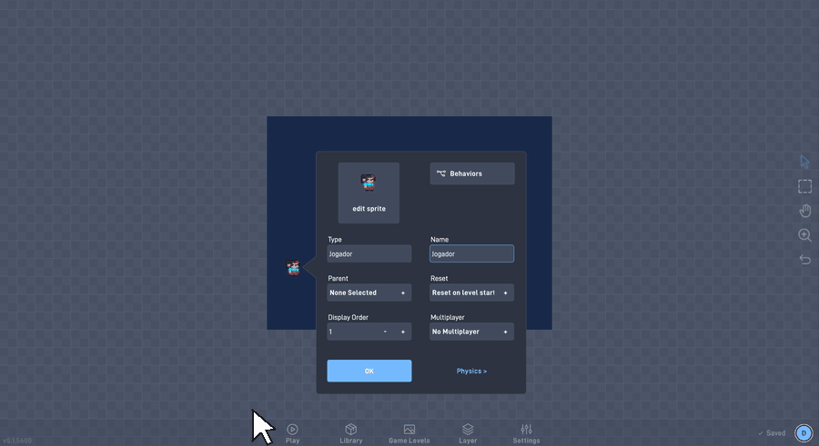
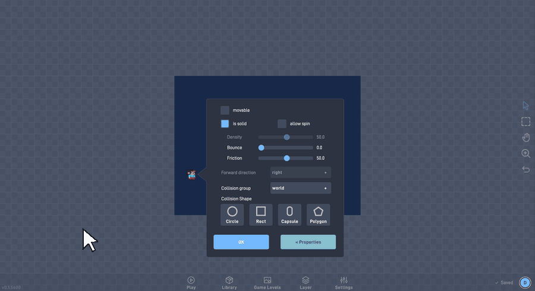
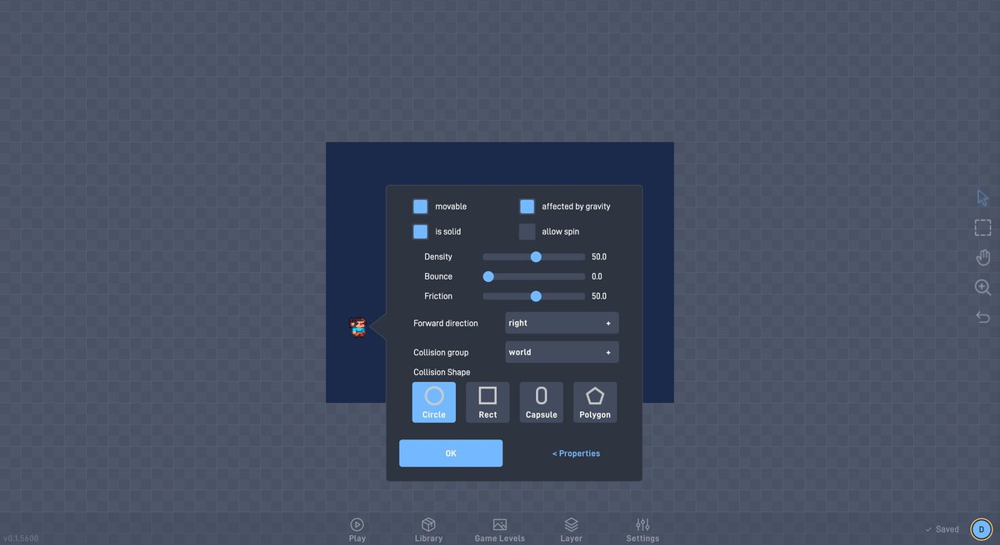
O clipe repete sozinho. Repare onde o cursor vai antes de clicar.
Foto da tela.
No painel do objeto, clique em Physics >.
movable — marque.
affected by gravity — deixe marcada.
Feche o painel do objeto.
- O boneco não cai nem anda
- movable ficou desmarcada. Reabra o painel e marque.
- Não acho a caixinha
- Ela fica na lista que abre embaixo de Physics. Role o painel se precisar.
Faça o jogador correr e pular
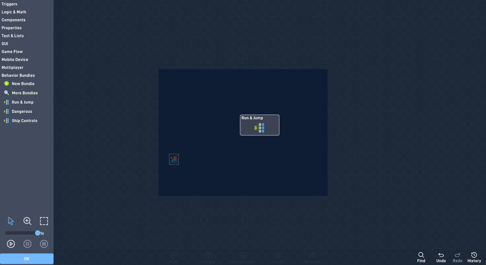
Foto da tela.
Clique no jogador e em Behaviors.
Na coluna da esquerda, lá embaixo, clique em Behavior Bundles e arraste o Run & Jump para o meio da mesa.
É o mesmo pacote das aulas 2, 6, 7, 8, 9 e 10. Espere uns segundos antes de fechar.
- Arrastei e não caiu nada
- Solte no meio da mesa, longe da beirada.
- Não acho Behavior Bundles
- É o último item da coluna da esquerda. Role até o fim.
Faça o chão
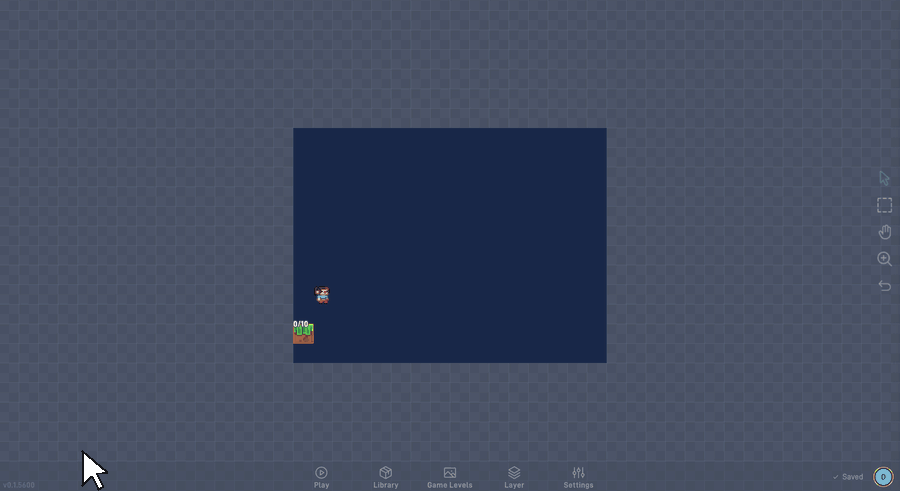
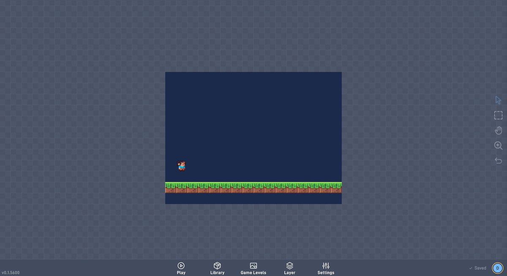
O clipe repete sozinho. Repare onde o cursor vai antes de clicar.
Foto da tela.
Feche as duas telas. Clique na casa do canto esquerdo da penúltima fileira de baixo e escolha Create. Em Name e em Type escreva Chao. Em edit sprite, pelo Browse, pegue o primeiro bloco de Flowlab Sprites › Blocks. Feche no OK.
Agora repita pela fileira toda: clique nela, escolha Clone, clique nas casas à direita até a ponta, e termine em done cloning.
- Ficou um buraco
- Clique na casa vazia, escolha Clone e preencha.
- O jogador cai para fora da folha
- Exatamente por isso o chão não pode ter falha.
A ESTRELA
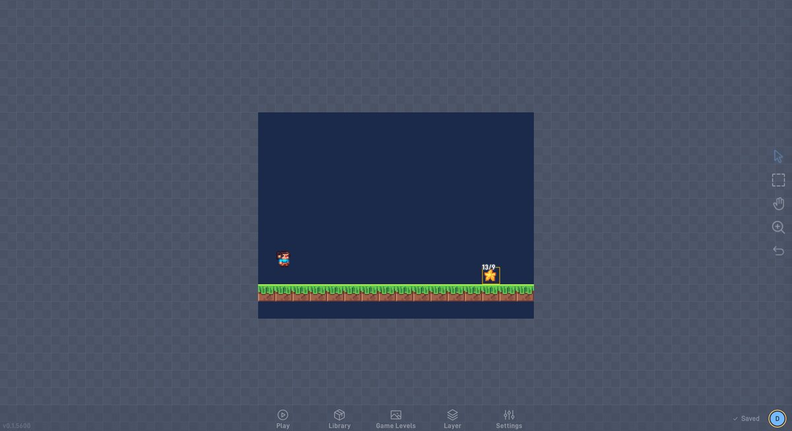
Foto da tela.
Clique numa casa perto da ponta direita, na terceira fileira de baixo para cima (a fileira em cima do chão) e escolha Create. Em Name e em Type escreva Estrela. Em edit sprite, pelo Browse, em Flowlab Sprites › Objects, pegue a estrela dourada. Feche no OK.
Não mexa na física dela: a estrela fica parada, e basta o jogador encostar.
- Não acho a estrela
- Ela está em Objects, e é amarela. Role a grade se precisar.
A estrela some quando é PEGA
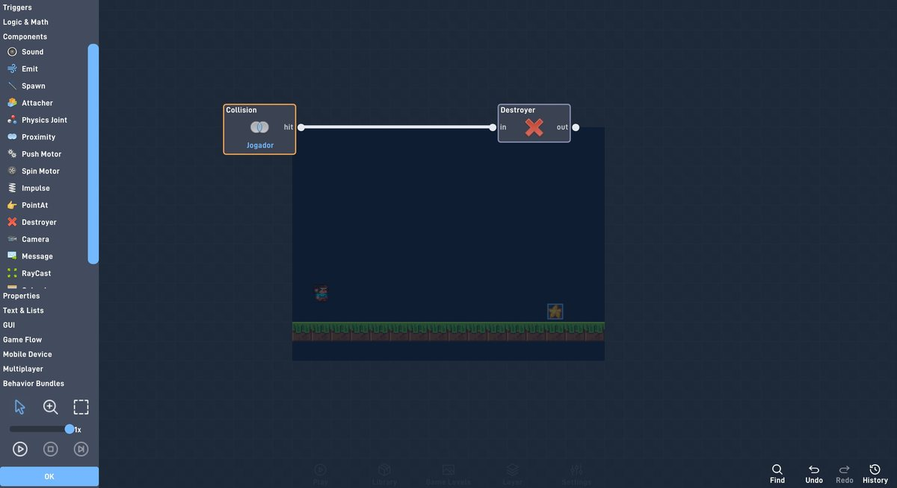
Foto da tela.
Clique na estrela e depois em Behaviors.
1. Em Triggers, arraste o Collision. Clique devagar nele e, na lista Any Type, escolha Jogador.
2. Em Components, arraste o Destroyer.
Um fio: de hit até in.
Lendo em voz alta: quando o Jogador encostar em mim, eu me destruo. É a moeda da Aula 1.
- A estrela some assim que o jogo começa
- O Collision ficou em Any Type e está contando o chão. Escolha Jogador.
- Não acho o Destroyer
- Ele fica em Components e tem um X vermelho.
Escolha o SOM
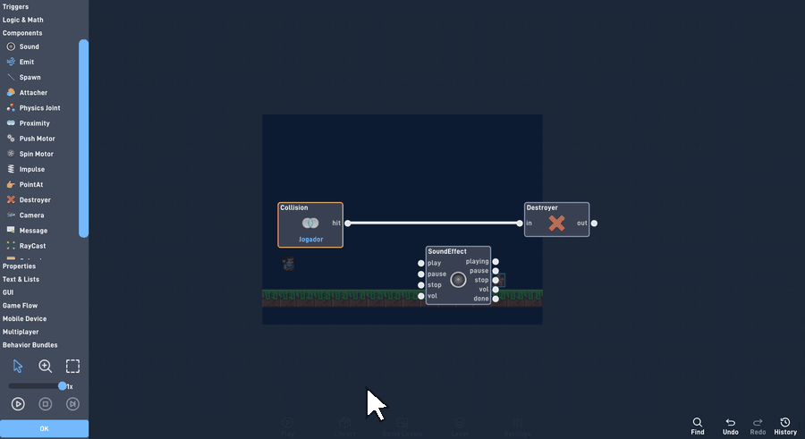
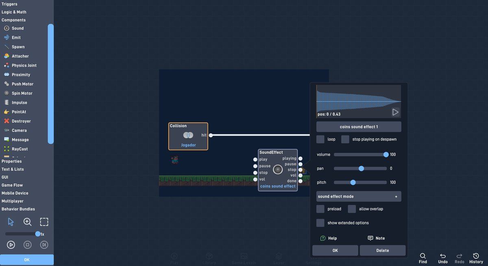
O clipe repete sozinho. Repare onde o cursor vai antes de clicar.
Foto da tela.
Ainda na mesa da estrela, em Components, arraste o Sound (na mesa ele se chama SoundEffect) para um espaço vazio. Clique devagar nele.
1. No painel, clique em Choose Sound. Abre a janela SELECT SOUND.
2. Clique em Sound Effects.
3. No campo de busca, escreva coin (moeda, em inglês).
4. Clique no primeiro da lista, coins sound effect 1. Dá para ouvir antes: o triângulo ao lado toca o som.
5. Clique em OK (o azul), no fim da janela.
Quando o painel mostrar o nome do som, feche-o no OK dele.
- Não acho a busca
- Ela aparece depois que você clica em Sound Effects, no alto da lista.
- A lista está em branco
- Espere um segundo: ela carrega. Se continuar, apague a palavra da busca e escreva de novo.
- A janela abriu num lugar estranho
- Ela abre ao lado do painel. Procure o título SELECT SOUND.
Ligue o som na batida
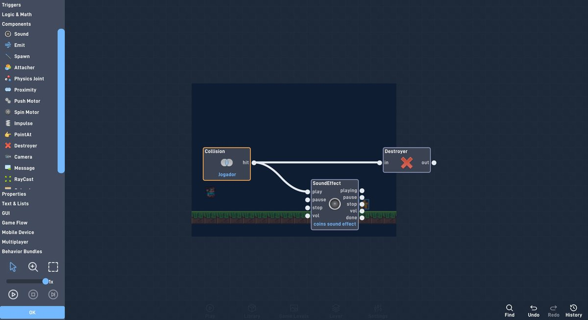
Foto da tela.
Um fio novo: de hit do Collision até play do SoundEffect.
O hit agora tem dois fios saindo dele: um vai ao Destroyer e o outro ao SoundEffect. A batida faz as duas coisas: toca o som e some com a estrela.
Se um bloco ficar em cima de um fio, arraste o bloco para o lado.
- O fio não pega no play
- Solte na bolinha de cima do SoundEffect, a do play. As outras (pause, stop, vol) fazem outras coisas.
- A estrela some mas não faz barulho
- Confira o fio no play e o volume do computador.
Crie a ANIMAÇÃO
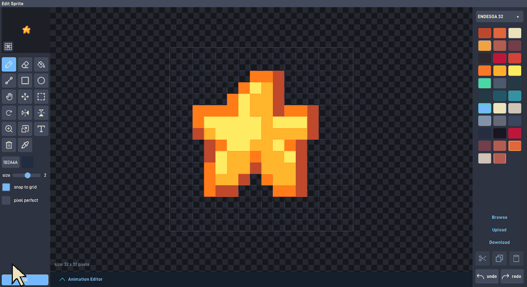
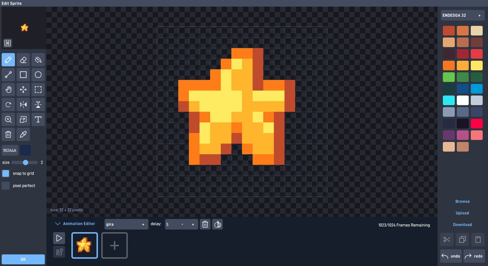
O clipe repete sozinho. Repare onde o cursor vai antes de clicar.
Foto da tela.
Feche a mesa (OK) e o painel. Clique na estrela e, no painel, em edit sprite — o editor de desenho abre.
1. Embaixo, clique em Animation Editor.
2. Clique em Pick Animation e, na lista, em Create New....
3. No campo do nome escreva gira e clique em OK.
Uma animação é uma sequência de desenhos que o jogo troca um depois do outro. Esta começa com um quadro: o desenho da estrela.
- Não acho o Animation Editor
- Ele fica na faixa escura de baixo do editor de desenho. Clique na setinha ao lado do nome.
- Escrevi o nome e nada
- Depois do nome, clique no OK da janelinha, e não no do editor.
O SEGUNDO quadro: de cabeça para baixo
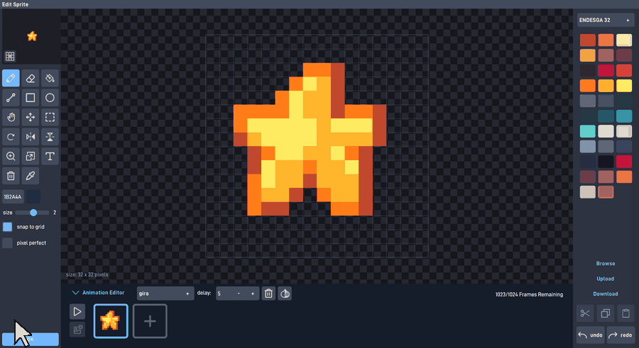
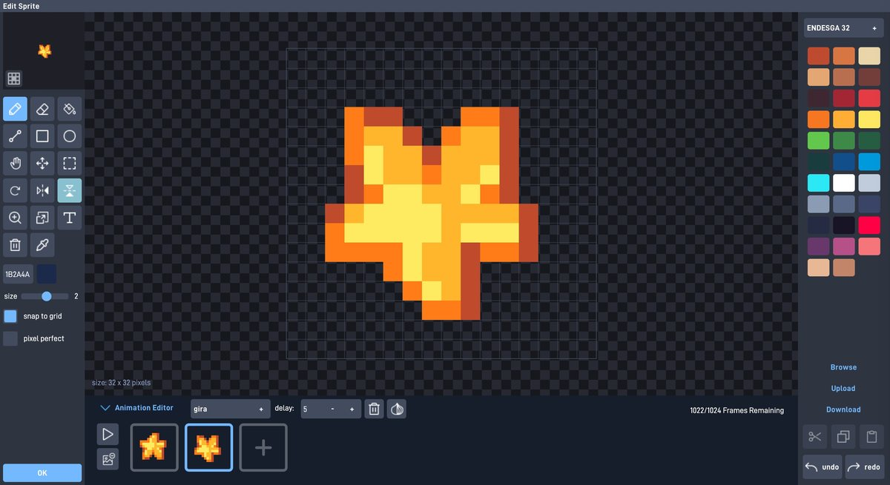
O clipe repete sozinho. Repare onde o cursor vai antes de clicar.
Foto da tela.
Ainda no editor de desenho, clique no + (o quadrado com um mais, depois do quadro da estrela). Nasce o quadro 2, que começa como cópia do primeiro.
Com o quadro 2 selecionado (a borda azul), clique na ferramenta que vira o desenho de cabeça para baixo (flip vertical: na coluna de ferramentas da esquerda, o terceiro ícone da quarta fileira, com dois triângulos, um para cima e outro para baixo).
Feche no OK, no canto de baixo à esquerda. Feche também o painel do objeto.
- Virei o quadro errado
- Clique no quadro 2 antes de usar a ferramenta, e confira se a borda azul está nele.
- Os dois quadros ficaram iguais
- Clique no quadro 2 e use o flip vertical uma vez. Se virar duas vezes, ele volta ao normal.
- Não vi diferença no desenho
- Uma estrela é quase igual de pé e de cabeça para baixo. A diferença é pequena: olhe a ponta de cima.
Mande a estrela GIRAR
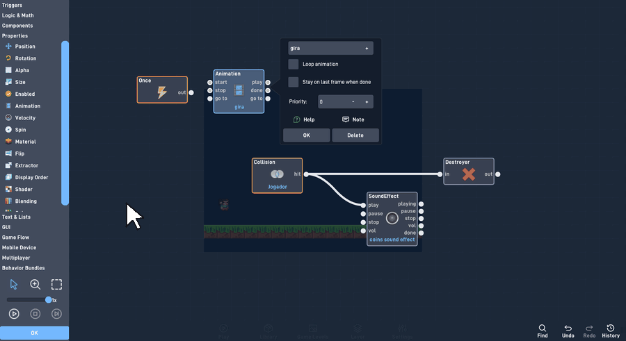
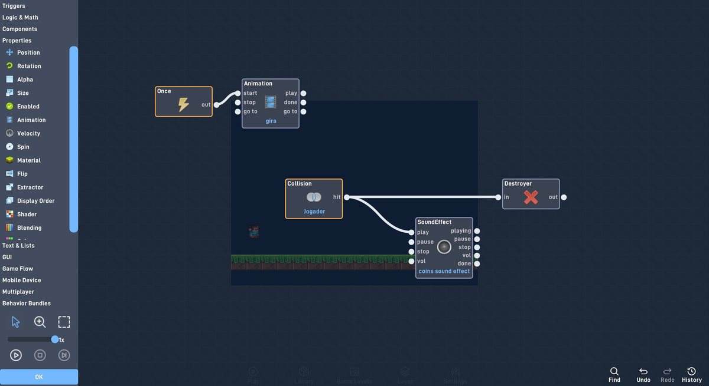
O clipe repete sozinho. Repare onde o cursor vai antes de clicar.
Foto da tela.
Clique na estrela e em Behaviors.
1. Em Triggers, o Once. Em Properties, o Animation.
2. Clique devagar no Animation. Em Pick Animation escolha gira e marque Loop animation (repetir sem parar).
3. Um fio: de out do Once até start do Animation.
Lendo em voz alta: quando o jogo começar, comece a animação gira, e repita.
- Não aparece gira na lista
- Os dois quadros precisam estar salvos: reabra o editor de desenho e confira se o OK foi apertado.
- A estrela gira uma vez e para
- Faltou marcar Loop animation no painel do bloco.
Jogue: a estrela GIRA
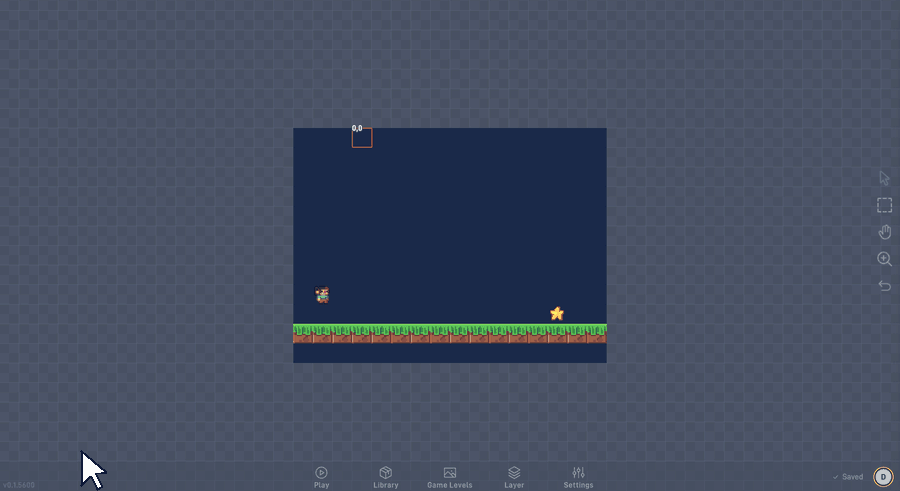
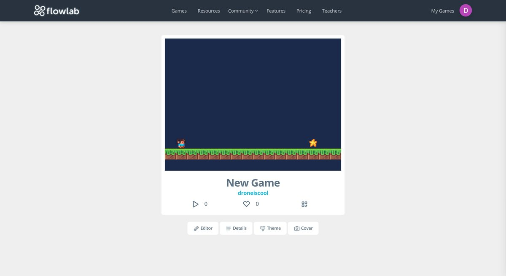
O clipe repete sozinho. Repare onde o cursor vai antes de clicar.
Foto da tela.
Feche as duas telas e clique em Play.
Olhe a estrela: ela vira de pé para cabeça para baixo, sem parar, sem você encostar em nada. É a animação rodando. A diferença é pequena (a estrela é quase igual dos dois lados): olhe a ponta de cima durante alguns segundos.
Depois corra até ela: a estrela some.
- Ela fica parada
- Confira o fio do Once até start e se o bloco mostra gira.
- Não vejo a estrela mexer
- Olhe a ponta de cima por alguns segundos: é uma mudança pequena. Se ela está mesmo parada, confira o Loop animation.
Dê BRILHO à estrela
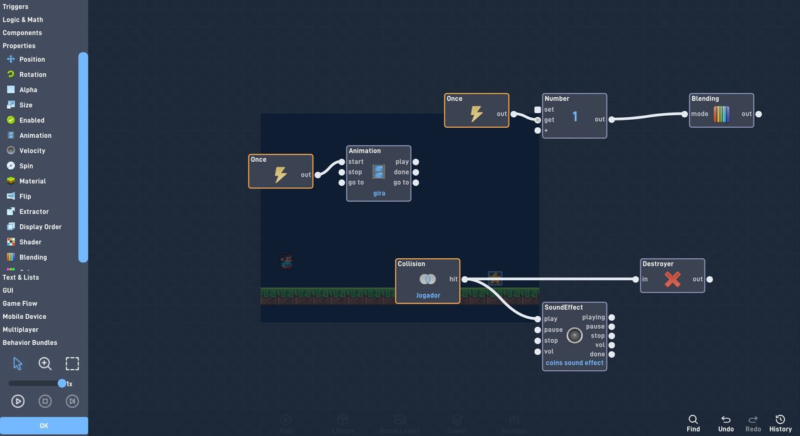
Foto da tela.
Volte ao editor, clique na estrela e em Behaviors.
1. Em Triggers, outro Once.
2. Em Logic & Math, o Number. Clique devagar nele e escreva 1.
3. Em Properties, o Blending.
Dois fios: de out do Once até get do Number; e de out do Number até mode do Blending.
O Blending diz como o desenho se mistura com o que está atrás: 0 é normal, 1 é somar as cores — a estrela clareia o fundo e brilha.
- O fio vai no set do Number
- Tem de ser no get, a bolinha redonda do meio. O set só guarda o número.
- O Number ficou com outro valor
- Clique devagar nele e escreva 1 de novo.
Jogue: a estrela BRILHA
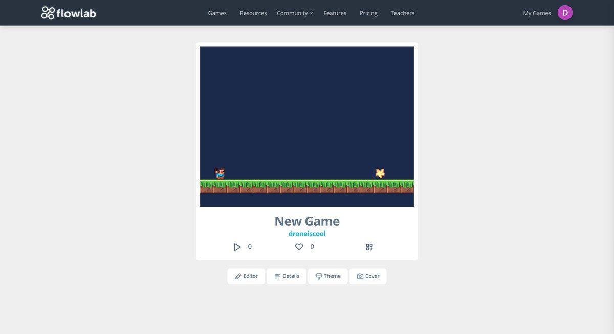
Foto da tela.
Clique em Play.
Compare com o passo 18: a estrela está mais clara, quase branca no meio. Mude o Number para 0 e jogue de novo se quiser ver a diferença — com 0 ela volta ao normal.
O som toca quando você a pega.
- Não vejo diferença
- Compare com o passo 18 lado a lado. A estrela fica mais clara, não de outra cor. E o fundo precisa ser escuro: num céu branco a soma não aparece.
- Não ouço o som
- Confira o volume do computador e o fio do hit no play do SoundEffect.
Pegue a estrela e mande o link
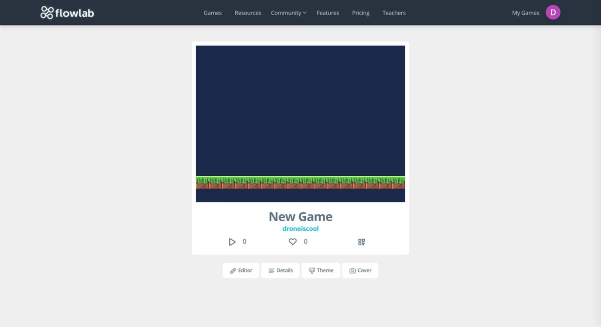
Foto da tela.
Aperte Play. Corra com as setas até a estrela: ela some e você ouve o som de moeda.
Depois de pegar a estrela, o jogador continua correndo e sai da fase pela direita — é normal: aperte Esc para voltar ao editor. Se você pular alto na hora errada, ele passa por cima da estrela: corra sem pular perto dela.
Para mandar para alguém: copie o endereço da barra do navegador e mande. Quem abrir vai ver a noite, a estrela girando e brilhando, e vai ouvir o som.
- Passei por cima da estrela
- O jogador pulou alto e passou por cima. Recomece com Esc e corra sem pular perto dela.
- O jogador sumiu pela direita
- Ele passou da estrela e saiu da fase. Aperte Esc e tente de novo.
- Quero mais coisas brilhando
- Dê o mesmo Once → Number → Blending a outro objeto.